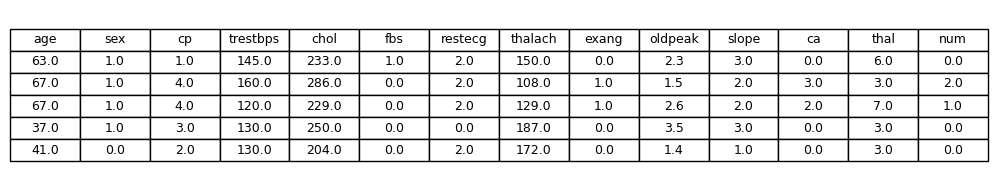
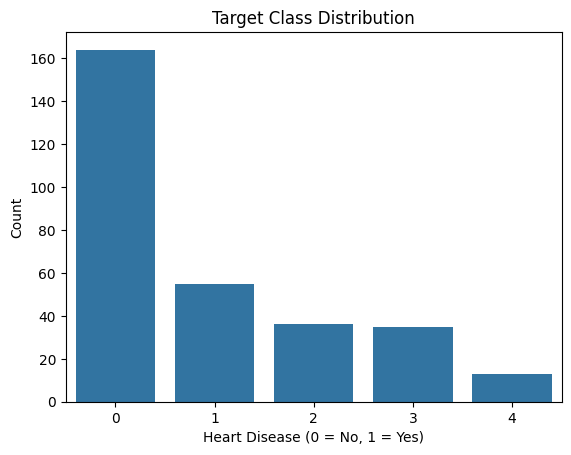
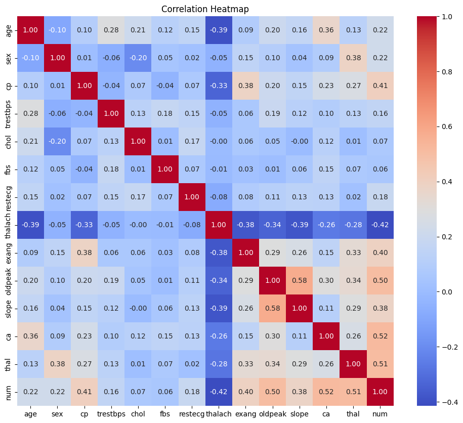
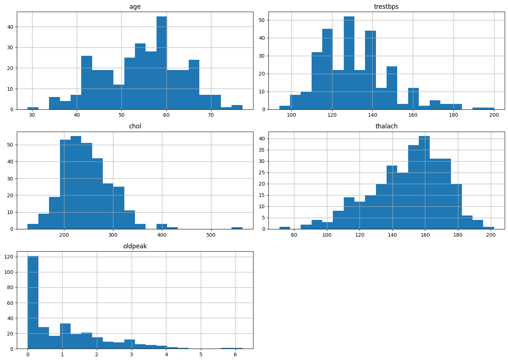
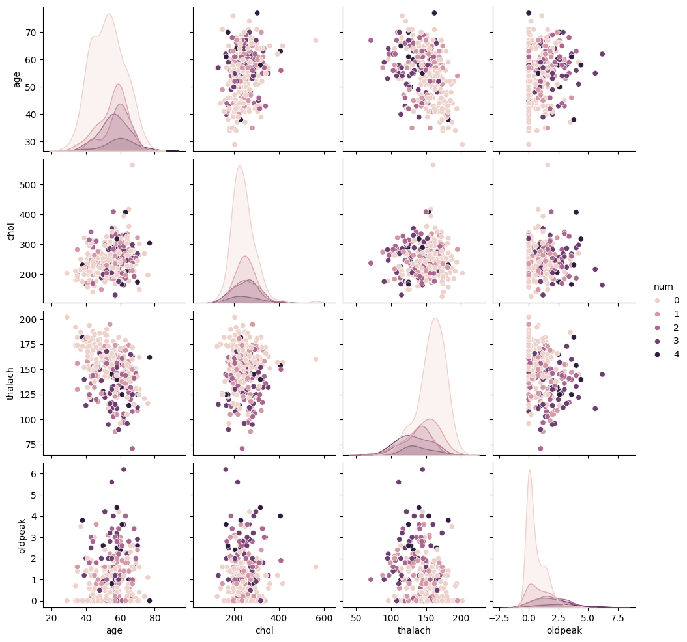
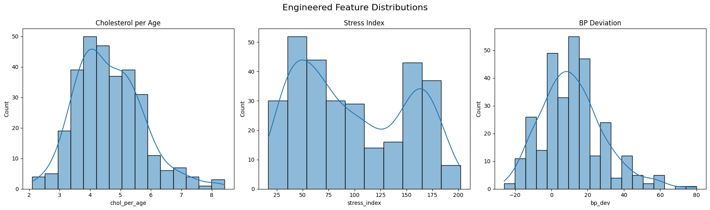
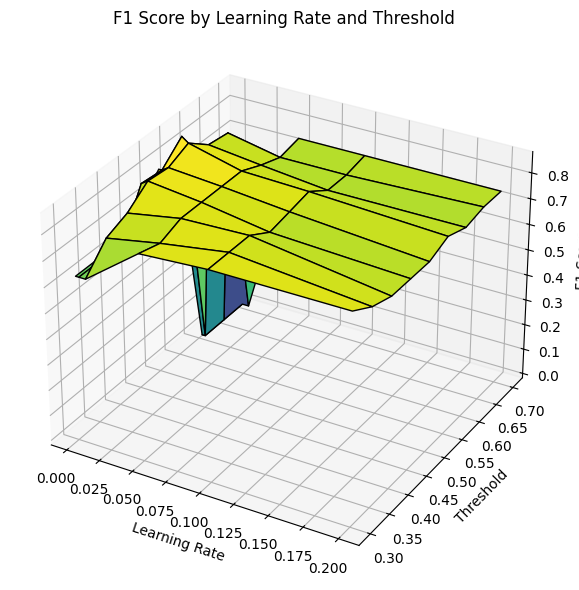

Heart Disease Prediction Case Study
Objective
The objective of this project is to build a machine learning model that predicts whether or not a patient has heart disease, using clinical data from the Cleveland Heart Disease dataset.
The original dataset included a severity scale in the num column, but for this project, I simplified the task to a binary classification problem:
- 0 → No heart disease
- 1 → Heart disease present
This binary framing was chosen for clarity, consistency, and greater practical relevance in real-world screening contexts. Rather than attempting to assess disease severity, the model’s goal is to flag whether or not the presence of heart disease is likely, enabling early detection and follow-up care.
Pre-Model Architecture
Data Cleaning
The dataset used in this project is a preprocessed version of the Cleveland Heart Disease dataset, named processed_cleveland_clean.csv. This file contains cleaned clinical records, with missing or invalid values already removed to ensure consistent training input.
The original target column num, which encoded heart disease severity (0–4), was converted into a binary label (target) prior to this stage. Only patients with confirmed heart disease are marked as 1; those without are labeled 0.
To begin, we load the cleaned dataset and inspect the first few rows:

Dataset Preview - Exploration
Target Distribution
Before binarizing the target, we explored the distribution of the original num column, which indicates the presence or severity of heart disease. For this project, we later transformed this column into a binary label where:
0→ No heart disease
1→ Heart disease present (any level of severity)
The following plot shows the class distribution before binarization:

Feature Insights
Correlation Analysis

After reviewing the distribution of heart disease cases in the dataset, I analyzed the relationships between features using a correlation matrix. This allowed me to identify which variables had the strongest associations with heart disease and to uncover any redundancy or multicollinearity that might affect model performance.
Key observations:
The correlation heatmap provided valuable early insights into which variables were most associated with heart disease.
ca(number of major vessels visualized) andthal(thalassemia result) showed the strongest positive correlations with the target. These features are likely to be strong predictors in the final model.oldpeak(ST depression induced by exercise) andcp(chest pain type) also demonstrated notable relationships with the target variable.thalach(maximum heart rate achieved) was negatively correlated with heart disease, which aligns with clinical expectations—lower max heart rate is often associated with reduced cardiovascular function.
This step guided the prioritization of features for engineering and provided direction on which variables held the most predictive value for our classification task.
Numerical Feature Distributions

To better understand the range and shape of the dataset’s continuous variables, I visualized the distributions of several key numeric features: age, trestbps (resting blood pressure), chol (serum cholesterol), thalach (maximum heart rate achieved), and oldpeak (ST depression induced by exercise).
From the histograms, I observed:
age: Fairly symmetric distribution centered around the mid-to-late 50s, suggesting a balanced representation of middle-aged patients.trestbps(Resting Blood Pressure): Displays a slight right skew, with many patients clustered between 120–140 mmHg.chol(Serum Cholesterol): Also right-skewed, with a strong concentration around 200–250 mg/dL, though some outliers reach significantly higher values.thalach(Maximum Heart Rate): Approximately normally distributed, centered around 150–170 bpm, consistent with expected stress test performance.oldpeak: Strong right-skew, with most patients exhibiting minimal ST depression, indicating many normal or near-normal results.
This distribution analysis highlighted potential scaling or transformation needs (e.g., for oldpeak) and drew attention to the presence of outliers that may influence model performance.
Pairwise Feature Relationships
To deepen our understanding of the interactions between key numerical features and the target variable (num), I created a pairwise comparison plot. This visualization displays the relationships between age, chol, thalach, and oldpeak, color-coded by the presence and severity of heart disease.

Several observations emerged from this visualization:
age: There is a slight upward shift in age as heart disease severity increases, though distributions for different levels still overlap.chol: Cholesterol values appear widely distributed across all severity levels, with no clear separation—suggesting it may not be a strong standalone predictor.thalach: An inverse trend is evident; individuals with more severe heart disease often have lower maximum heart rates.oldpeak: As thenumvalue increases, so does the ST depression, indicating its potential importance in identifying more serious conditions.
This plot helped guide feature selection and engineering efforts by identifying patterns, correlations, and limitations within the raw data.
Feature Engineering

To improve the predictive power of our model, I engineered several new features based on domain logic and feature interactions:
chol_per_age: A ratio between cholesterol and age. This normalizes cholesterol levels across different age groups, helping control for the natural increase of cholesterol with age.stress_index: Created by dividingthalach(maximum heart rate achieved) byoldpeak + 1. This index gives a relative measure of cardiac stress, especially useful for differentiating between similar heart rates with varying ST depressions.bp_dev: Measures deviation from the typical resting systolic blood pressure (120 mmHg). Positive values indicate elevated blood pressure.age_bucket: Binned theagefeature into ordinal ranges (e.g., 30–40, 41–55, etc.), then one-hot encoded them (dropping the first to avoid multicollinearity). This allows the model to better learn nonlinear age effects without assuming continuity.
These engineered features were designed to extract more meaningful signal from the original data, especially in cases where raw values may obscure important relationships.
Model Training and Tuning
Data Splitting
To ensure robust model evaluation and avoid overfitting, the dataset was split into three distinct sets:
- Training Set (60%): Used to train the initial model and fit parameters.
- Validation Set (20%): Used during model development for tuning hyperparameters, feature selection, and threshold adjustment. This helped guide decisions without touching the final evaluation data.
- Holdout Set (20%): Kept completely separate and untouched until the end. This set served as the final test to evaluate the generalization performance of the selected model pipeline.
This three-way split allowed for a more realistic estimate of model performance on truly unseen data and helped ensure that model improvements weren’t the result of overfitting to the validation set.
Model Selection
Given the structured and tabular nature of the dataset, we opted to use a gradient boosting classifier — specifically, the XGBoost algorithm. This choice was driven by several factors:
- Performance: XGBoost is known for its strong performance on classification tasks, particularly when working with mixed feature types and moderate-sized datasets.
- Robustness: It handles missing values, outliers, and non-linear relationships effectively without the need for extensive preprocessing.
- Interpretability: Despite being a powerful ensemble method, XGBoost still allows us to inspect feature importance and understand decision boundaries.
While simpler models (e.g., logistic regression) were considered, preliminary testing revealed that XGBoost consistently delivered higher accuracy and F1 scores across validation splits. Its ability to optimize directly for metrics like AUC or F1 made it especially well-suited for our imbalanced classification problem.
Additionally, XGBoost provided flexibility for threshold tuning, sample weighting, and integration with feature engineering steps—making it the ideal backbone for our final model pipeline.
Learning Rate and Threshold Optimization
To improve classification performance, particularly given the class imbalance, I performed a grid search over combinations of learning_rate and classification threshold. These hyperparameters influence how aggressively the model learns and how it balances precision and recall in its final predictions.
Using an XGBoost classifier, I explored several learning_rate values ranging from 0.0025 to 0.2, and classification thresholds from 0.30 to 0.70. For each pair, the model was trained and evaluated on the validation set using the F1 score as the performance metric.
This resulted in the following 3D surface plot, which visualizes how different learning rate and threshold combinations affect the F1 score:

From this visualization, I was able to identify regions where the model performed optimally. A lower learning rate consistently produced better results, with the F1 score peaking around a moderate threshold.
The best configuration identified was:
Learning Rate:0.005
Threshold:0.55
Validation F1 Score:0.8636
This process helped tune the model for better generalization on the holdout set. By optimizing the threshold, I ensured the classifier maintained a better balance between false positives and false negatives—especially important in a medical context where both errors carry significant consequences.
Final Evaluation
Validation Evaluation
The model was first validated using a dedicated validation set to fine-tune parameters and gauge generalization:
Accuracy: 0.8542
Precision: 0.8571
Recall: 0.8182
F1 Score: 0.8372
The classification report confirms a balanced performance across classes:
Class 0 and 1 both show strong precision and recall.
The macro and weighted averages for F1 score are consistent at 0.85.
This indicates that the model is not only accurate but also reliable in its classification decisions across categories.
Holdout Evaluation
After finalizing the model, performance was tested on a completely untouched holdout set:
Accuracy: 0.8000
Precision: 0.9000
Recall: 0.6429
F1 Score: 0.7500
Key observations from the holdout classification report:
- The model achieved very high precision (0.90) on predicting heart disease (class 1), meaning when it predicted disease, it was usually correct.
- However, the recall dropped to 0.64, indicating that some true cases of heart disease were missed.
- Overall performance remains solid with a macro F1 score of 0.79, suggesting that the model still generalizes well to unseen data.
This evaluation provided confidence that the model performs robustly while also identifying opportunities for improvement, such as potentially boosting recall for heart disease cases.
Supporting Documents
All project resources are available below for reproducibility and deeper inspection:
- 1_data_cleaning.html: Covers how the dataset was loaded, cleaned, and preprocessed.
- 2_data_exploration_EDA.html: Provides visual insights into class balance and feature distributions.
- 3_feature_engineering_visuals.html: Showcases engineered features, transformations, and buckets.
- 4_model_tuning.html: Displays threshold tuning, learning rate exploration, and validation performance.
- 5_final_model.html: Contains final model training, holdout testing, and evaluation interpretation.
- processed_cleveland_clean.csv: Cleaned dataset used throughout the project.
These supporting documents reflect a structured approach to building a robust binary classification pipeline.